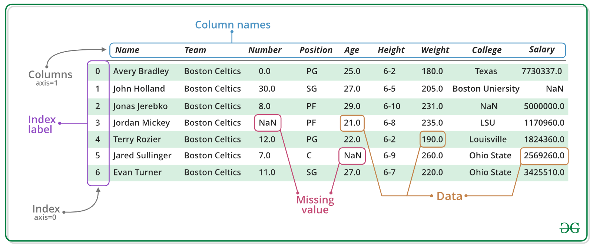

Tallbehandling i pandas#
Pandas er et bibliotek i Python som brukes til å jobbe med data.
Pandas er et sentralt verktøy for dataanalyse [McK10]. NumPy brukes for numeriske beregninger [H+20]. Pandas og numpy er noen av de mest brukte python-bibliotekene innen datavitenskap. Pandas er tilrettelagt for vektoriserte beregninger og åpner for flere muligheter for databehandling enn de grunneggende datatypene array og lister. Datastrukturen er et regneark med read-indekser og kolonnenavn [HL23].
Den viktigste datastrukturen i pandas er DataFrame, forkortet df, en tabell med rader og kolonner.
I Fig. 11 vises en dataframe bestående av rader og kolonnenavn, i henholdsvis akser 0 og 1.
Video: Opprette et DataFrame#
Denne videoen viser hvordan man oppretter et DataFrame i pandas.
{kind=link}

Fig. 11 Illustrasjon av strukturen i en Pandas DataFrame, basert på et eksempeler fra [HL23]. Lenke til techteach lenger ned.#
Akser - rader og kolonner#
axis |
indikerer |
|---|---|
axis=0 |
rad |
axis=1 |
kolonne |
Komponenter#
Foruten dataframe, er en annen viktig komponent i pandas; series.
En series er en kolonne, mens dataframe er en tabell med flere kolonner (series).
Eksemplet under er hentet fra Python for relafag’s [HL23] ressursside techteach. I dette eksemplet lages først to Series som danner en dataframe.
import pandas as pd
# Creating Series:
s1 = pd.Series([2.0, 3.5, 6.2, 9.1], name='x-coor')
s2 = pd.Series([-1.0, 0.0, 3.3, 2.1], name='y-coor')
# Creating DataFrame:
df = pd.concat([s1, s2], axis=1)
print('s1 ='); print(s1); print('')
print('df ='); print(df); print('')
s1 =
0 2.0
1 3.5
2 6.2
3 9.1
Name: x-coor, dtype: float64
df =
x-coor y-coor
0 2.0 -1.0
1 3.5 0.0
2 6.2 3.3
3 9.1 2.1
I eksemplet over benyttes pandas funksjonen pd.concat, som betyr å konkatinere eller slå sammen. pd.concat slår sammen rader ved å definere rad-akse (axis=0), eller kolonne-akse (axis=1) og returnere et Dataframe-objekt.
Eksemplet printer også ut datatypene: type():
print('Data type of s1:', type(s1))
print('Data type of df:', type(df))
Data type of s1: <class 'pandas.core.series.Series'>
Data type of df: <class 'pandas.core.frame.DataFrame'>
Her ser du at alle tallene er lagret som float64, siden de inneholder desimaltall (2.0, 3.5, osv.). Dette er et godt eksempel på hvorfor datatyper er viktige i pandas: pandas vet at kolonnene inneholder numeriske verdier og kan derfor manipulere og utføre matematiske operasjoner som gjennomsnitt, sum, minimum og maksimum direkte.
Manipulasjon av dataframe#
Vi velger ut noen viktige manipulasjoner vi kan gjøre på en dataframe i eksempel 10.5 fra techteach videreført med samme tall fra forrige eksempel. Hele eksemplet finner du lenke til her: 10.5
Utvalgte rader og kolonner med .iloc:
import pandas as pd
import numpy as np
# Select specific columns
# (first column is 0, second is 1 etc.):
df1 = df.iloc[:, [0, 1]]
print('df1 ='); print(df1); print('')
# Select specific columns AND rows:
df2 = df.iloc[1:3, [0, 1]]
print('df2 ='); print(df2); print('')
df1 =
x-coor y-coor
0 2.0 -1.0
1 3.5 0.0
2 6.2 3.3
3 9.1 2.1
df2 =
x-coor y-coor
1 3.5 0.0
2 6.2 3.3
Utføre addisjon med +operator:
#Column x + column y is stored in new colunm named x+y:
df['x+y'] = df['x-coor'] + df['y-coor']
print("df['x+y'] ="); print(df); print('')
df['x+y'] =
x-coor y-coor x+y
0 2.0 -1.0 1.0
1 3.5 0.0 3.5
2 6.2 3.3 9.5
3 9.1 2.1 11.2
Når vi bruker funksjon på et objekt som en dateframe eller Series, kaller vi det en metode.
Under vises hvordan man vi bruker metoden .drop() til å fjerne utvalgte kolonner og rader:
# Delete specific columns:
df3 = df.drop(columns = ['x-coor'])
print('df3 ='); print(df3); print('')
# Delete spesific row:
df4 = df.drop(index = 2)
print('df4 ='); print(df4); print('')
df3 =
y-coor x+y
0 -1.0 1.0
1 0.0 3.5
2 3.3 9.5
3 2.1 11.2
df4 =
x-coor y-coor x+y
0 2.0 -1.0 1.0
1 3.5 0.0 3.5
3 9.1 2.1 11.2
Gjøre om til numpy array.
arr_from_df4 = df4.to_numpy()
print('arr_from_df4 ='); print(arr_from_df4); print('')
arr_from_df4 =
[[ 2. -1. 1. ]
[ 3.5 0. 3.5]
[ 9.1 2.1 11.2]]
.mean()#
Gjennomsnitts-metoden på kolonner og rader:
# Calculate the mean column wise:
mc = df.mean()
print('mean column-wise =', mc, '\n')
# Calculate the mean row-wise:
mr = df.mean(axis = 1)
print('mean row-wise =', mr, '\n')
mean column-wise = x-coor 5.2
y-coor 1.1
x+y 6.3
dtype: float64
mean row-wise = 0 0.666667
1 2.333333
2 6.333333
3 7.466667
dtype: float64
.mean()#
Summasjons-metode på kolonner og rader:
# Calulate the sum column-wise:
sc = df.sum()
print('sum column-wise =', sc, '\n')
# Calulate the sum row-wise:
sr = df.sum(axis = 1)
print('sum row-wise =', sr, '\n')
sum column-wise = x-coor 20.8
y-coor 4.4
x+y 25.2
dtype: float64
sum row-wise = 0 2.0
1 7.0
2 19.0
3 22.4
dtype: float64
.cumsum()#
Kummulativ-summeringsmetode:
# Cumulative sum column-wise:
cc = df.cumsum()
print('cumulative sum column-wise =\n', cc, '\n')
cumulative sum column-wise =
x-coor y-coor x+y
0 2.0 -1.0 1.0
1 5.5 -1.0 4.5
2 11.7 2.3 14.0
3 20.8 4.4 25.2
.sort()#
Sorterings-metode og statistikk
# Sort values in column x+y from largest to smallest:
sorted = df.sort_values(by = 'x+y')
print('sorted large-small:\n', sorted, '\n')
sorted large-small:
x-coor y-coor x+y
0 2.0 -1.0 1.0
1 3.5 0.0 3.5
2 6.2 3.3 9.5
3 9.1 2.1 11.2
.describe()#
Metoden gir en statistisk oppsummering av de numeriske kolonnene i en DataFrame:
# Basic statsistics column-wise:
stat = df.describe()
print('basic stats column-wise:\n', stat, '\n')
basic stats column-wise:
x-coor y-coor x+y
count 4.000000 4.000000 4.000000
mean 5.200000 1.100000 6.300000
std 3.127299 1.954482 4.836666
min 2.000000 -1.000000 1.000000
25% 3.125000 -0.250000 2.875000
50% 4.850000 1.050000 6.500000
75% 6.925000 2.400000 9.925000
max 9.100000 3.300000 11.200000